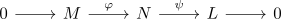
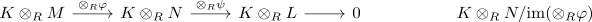

tensor functor as right exact functor
Proposition
Let \(R\) be a ring, $K$ an \(R\)-module and $\mathrm{RMod}$ the category RMod. Then the tensoring functor is right exact functor
Proof
using:
Suppose there exists a short exact sequence

Then w.l.o.g. for elementary tensors
$\otimes_K(\psi)$ surjective
for an elementary tensor $l \otimes k \in L \otimes_R K$. Then, since $\psi$ is surjective, there exists an $n \in N$ such that $\psi(n) = l$. Therefore
\begin{align*}
\otimes_K(\psi)((n \otimes k) = \psi(n) \otimes k
\end{align*}
$\mathrm{im}(\otimes_K(\varphi)) \subseteq \mathrm{ker}(\otimes_K(\psi))$
for an elementary tensor $m \otimes k \in M \otimes_R K$.
Then we get
\begin{align*}
\otimes_K(\psi \varphi)(m \otimes k) =& ((\psi \circ \varphi)(m) \otimes k) \\
=& (0 \otimes k) \\
=& 0
\end{align*}
$\mathrm{ker}(\otimes_K(\psi)) \subseteq \mathrm{im}(\otimes_K(\varphi))$
painful :( TODO
